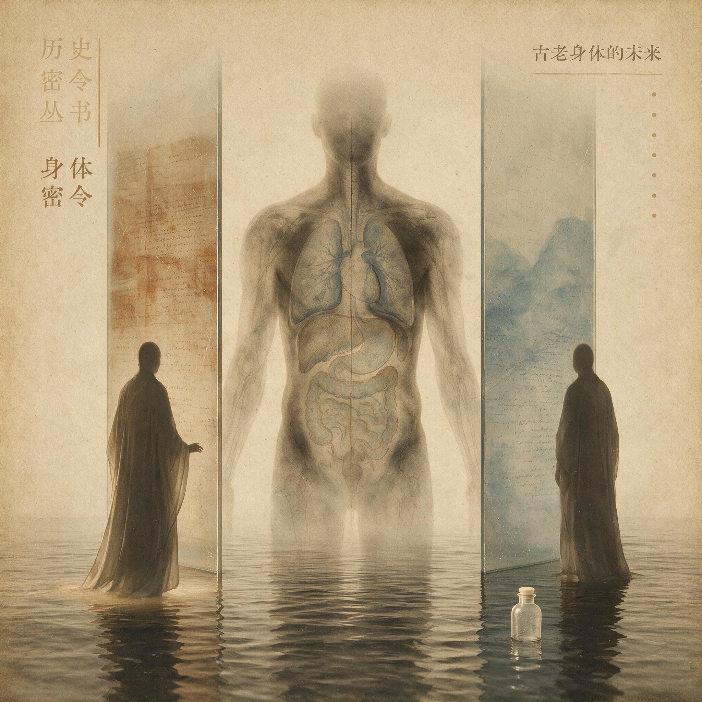

第 18 章
古老身体的未来
2023年5月5日，世界卫生组织宣布新冠疫情不再构成国际关注的突发公共卫生事件。同一天，全球有数百万块智能手表屏幕亮起，提醒佩戴者完成今日的站立目标、呼吸训练、心率监测。这两个画面

古老身体的未来：历史出版插图
AI 生成插图，非史实影像。
叠在一起，构成了一个奇特的并置：一边是人类与古老身体信号的漫长搏斗终于转入新阶段，另一边是我们从未像今天这样被数据包围着、提醒着、催促着去关注自己的身体。
但关注不等于理解。你手腕上那块闪烁着数字的屏幕，和你胸腔里那颗跳动了上百万年的心脏，讲的是两种完全不同的语言。
不是某一种具体的身体信号，而是整部信号系统在现代世界中的命运。这副身体是在更新世的草原上打磨出来的，它的操作系统写入了应对饥饿、创伤、感染、捕食者的指令集。现在，我们把同一副身体扔进了外卖软件、恒温办公室、智能手环和二十四小时新闻推送的世界里。
接下来会发生什么？答案是：错配不会消失，它会演化。而我们理解这套指令系统的方式，将决定我们在未来几十年是成为身体密令的合格解读者，还是继续在误读中付出代价。---
让我们先从三条原则说起。这三条原则不是从某一章里提炼出来的，而是贯穿了全书二十种身体信号的底层逻辑。掌握它们，你就可以把这本书带出去，应用到任何我们没来得及讨论的身体信号上。
第一条原则：信号是预测性的，不是反应性的。这是全书反复出现的一个主题，但它太重要了，值得在收束时再讲一次。你感到疲劳，不是因为你的肌肉里真的没有能量了，而是你的大脑在预测：如果继续以当前强度活动，你可能会在未来的某个时刻耗尽能量。你感到恶心，不是因为你的胃里已经有了毒素，而是你的脑干在根据嗅觉、味觉、视觉线索做出预判——这东西可能有问题，最好别让它进去，如果已经进去了，吐出来。
这个区别不是学术上的咬文嚼字。它改变了我们对身体信号的全部理解方式。如果信号是反应性的，那么信号的出现就意味着损害已经发生，信号就是故障警报。但如果信号是预测性的，那么信号的出现意味着身体在做风险管理，信号是预防措施。举一个书外的例子。你走进一间闷热的会议室，十分钟后开始头痛。
按照反应性的逻辑，你会想：是不是空气里的二氧化碳浓度已经高到损伤了我的大脑？不是。你的头痛是预测性的：大脑检测到环境参数的变化——温度升高、湿度增加、二氧化碳浓度上升——这些参数在过去数百万年的进化史上，常常伴随着缺氧、中暑、脱水等真正的威胁。在大脑看来，闷热的会议室和更新世草原上的烈日午后共享着某些模式。于是它拉响警报：头痛，让你想离开这个环境。这不是故障，这是预测引擎在工作。
但问题来了。预测引擎需要依赖历史数据来校准。你的大脑默认的历史数据，是更新世草原上的生存经验。它不知道什么是中央空调，什么是截止日期，什么是必须在闷热会议室里坐三个小时的会议文化。所以它发出了一个在过去合理、在今天却可能被误读的信号。
这就是第二条原则：信号之间存在优先级竞争。身体从来不是一个单一指令的系统。我们在第5章讲指令的源头时已经看到，从细胞到组织到脑干到大脑皮层，每一层都在发出信号，每一层都在试图影响最终的行为输出。
这些信号不是和谐共处的，它们在竞争。炎症因子说：休息，我需要资源来修复组织。皮质醇说：保持警觉，环境中有威胁。多巴胺系统说：那边有高热量食物，去吃。腺苷说：能量储备在下降，该停了。这些信号同时涌向决策中枢，而最终胜出的那个，决定了你的行为。
在更新世草原上，这套优先级竞争系统运转得相当好。当狮子出现时，皮质醇和肾上腺素的信号会瞬间压倒一切——你不会在逃跑的中途停下来吃浆果。当感染发生时，炎症因子的信号会让你自动减少活动、增加睡眠——你不会在发烧时还坚持去打猎。优先级是清晰的，因为威胁的等级是清晰的。
但在现代环境中，威胁的等级变得模糊了。你的老板在邮件里用了三个感叹号，这触发了皮质醇的警觉反应。你的手机震动了一下，可能是重要消息，也可能只是广告，但多巴胺系统已经开始期待。你的智能手表显示你只睡了六个小时，但咖啡因阻断了腺苷的信号。你的膝盖在隐隐作痛，但截止日期就在眼前，大脑皮层压下了疼痛信号，让你继续坐着工作。
优先级竞争还在，但裁决标准已经混乱了。身体不知道截止日期和狮子的区别，它只知道有压力和没压力。而现代生活提供的压力信号——持续的低强度、高频率、无明确终点的心理社会压力——是更新世草原上从未出现过的模式。身体没有进化出处理这种压力的专门指令。于是它只能调用现有的应激系统，一遍又一遍，直到系统开始磨损。
这就引出了第三条原则：压制信号不等于解决问题。我们在第16章误读的代价里详细拆解过这个逻辑。用止痛药压制慢性头痛，可能触发中枢敏化，让疼痛系统变得更加敏感。用咖啡因长期阻断疲劳信号，可能导致腺苷受体的上调，让你需要越来越多的咖啡因才能维持同样的清醒度。用退烧药压制感染时的发热，可能延长病程，因为发热本身就是免疫系统在加速工作。这些案例的共同教训是：身体信号不是可以被随意静音的闹钟。它们是一个动态调节系统的一部分，压制信号往往触发系统的补偿性反弹。
信号被堵住了，但发出信号的原因还在，于是系统会提高信号的强度，或者找到另一条通路来传达同一个信息。
这三条原则——预测性、优先级竞争、压制无效——构成了一个解读身体密令的通用框架。它们不是三条需要背诵的教条，而是一副眼镜。戴上这副眼镜，你再去看任何身体不适，视角都会发生变化。
比如说，你半夜醒来，感到心慌。在没有这副眼镜之前，你可能会想：我是不是心脏有问题？然后你打开手机搜索症状，越搜越慌。但戴上这副眼镜之后，你会问：这个信号在预测什么？你的身体检测到了什么模式？也许是白天的慢性压力让皮质醇水平在夜间仍然偏高。也许是睡前那场激烈的网络争论激活了古老的社交威胁检测系统——在更新世草原上，被群体排斥意味着生存危机。你的心脏没有出故障，它只是在执行一套在特定环境下合理的预测算法。环境变了，算法没变。再比如说，你在超市里感到莫名的焦虑，手心出汗，想要快速离开。
戴上这副眼镜之后，你会看到：你的视觉系统正在处理大量的高饱和度色彩、荧光灯的频闪、人群的运动轨迹。你的听觉系统正在处理背景音乐、促销广播、购物车的碰撞声。你的嗅觉系统正在处理几十种食品混合的气味。在更新世草原上，这种强度的感官输入通常意味着什么？意味着你闯入了一个陌生且可能危险的领地。你的身体按照古老的脚本启动了警觉模式。不是你有毛病，是超市这个环境对你的身体来说太奇怪了。---
现在，让我们把镜头再拉远一些。这三条原则帮助我们解读单个信号，但还有一个更大的问题悬置着：这副身体，作为一个整体，正在走向哪里？
2020年初，一种新的冠状病毒开始在人类群体中传播。世界卫生组织在1月30日宣布这构成国际关注的突发公共卫生事件，3月11日评估认为已具有大流行特征。联合国秘书长古特雷斯后来称这是人类自第二次世界大战以来面临的最严峻危机。从身体密令的角度看，这场大流行是一个巨大的自然实验。它把一种全新的病原体扔进了一副有着古老免疫指令的身体里，然后我们得以观察：这副身体如何应对一个它从未见过的威胁？
答案的一部分是熟悉的。发热启动了，这是免疫系统在加速工作。疲劳降临了，这是身体在强制休息以节省能量用于免疫防御。咳嗽出现了，这是呼吸道在试图排出异物。这些信号我们已经在前面各章里逐一拆解过了。
但答案的另一部分却是陌生的。一部分感染者在急性期过后没有恢复。他们持续感到疲劳、脑雾、运动后不适。
这种状态被称为长新冠，而它的症状与一种已经存在了几十年却一直未被充分理解的疾病惊人地相似——慢性疲劳综合征，或者用2015年美国国家医学院提出的名称，全身性劳累不耐症。这种疾病的病因至今不清楚。在1980年代晚期和1990年代初期，研究者曾经怀疑人类疱疹病毒第四型是元凶，但后来证实并非单一因素。它可以发生在单核细胞增多症之后，可以在H1N1流感感染之后，可以在水痘带状疱疹病毒感染之后，也可以在SARS-CoV-1和SARS-CoV-2之后。病毒感染似乎是一个触发因素，但不是全部的解释。遗传和环境因素都在起作用，神经、免疫和能量代谢系统都可能参与其中。
这里有一个值得注意的细节：系统评价发现，疲劳严重程度是慢性疲劳综合征预后的关键预测因子，而心理因素与预后无显著关联。换句话说，这种病的走向取决于身体层面的信号强度，而不是心理层面的态度。这不是一种心理疾病，它是一种生物学疾病。
身体在发出一个真实的、持续的、无法被意志压制的疲劳信号。为什么会这样？我们还不知道确切答案。
但如果我们戴上那副三条原则的眼镜，我们可以提出一些值得追问的方向：慢性疲劳综合征是不是某种预测性调控系统的失控？身体是不是在检测到某种模式——也许是急性感染期间的大规模免疫激活——之后，错误地进入了长期节能模式？优先级竞争系统是不是卡住了，炎症信号持续占据上风，压倒了其他信号？
这些问题指向一个更大的未知：身体的预测引擎在某些情况下可能出错，不是因为它设计得不好，而是因为它遇到了设计时从未考虑过的场景。更新世草原上没有大规模病毒感染后还能存活下来继续生活的情况——要么你死了，要么你康复了。身体没有进化出处理感染后持续低度免疫激活这个状态的专门指令。
于是它只能用现有的工具来应对，而这些工具——长期疲劳、运动不耐受、认知功能下降——在远古环境中可能是保护性的，在现代环境中却成了致残性的。---
2020年12月2日，首个新冠疫苗BNT162b2获得英国药监局的紧急使用授权。12月8日，英国开始大规模接种。12月11日，美国食品药品监督管理局批准该疫苗的紧急使用授权。
疫苗的到来改变了大流行的轨迹。但从身体密令的角度看，疫苗本身也是一个值得思考的案例。疫苗的工作原理是什么？它向身体展示一个无害的病毒片段——刺突蛋白的mRNA序列，或者灭活的病毒颗粒——让免疫系统提前认识这个敌人，产生记忆细胞。当真正的病毒入侵时，身体已经准备好了。这是一次成功的信号校准。我们没有压制免疫系统的警报功能，我们给了它更准确的情报。我们利用了身体固有的预测机制——免疫记忆——而不是试图绕过它。疫苗不是对抗身体密令，而是与它合作。
但疫苗的推广过程也暴露了另一种错配。一部分人对疫苗产生了显著的副作用：发热、疲劳、肌肉酸痛。这些症状通常在二十四到四十八小时内消退，但它们让很多人感到不安。为什么注射一个预防疾病的东西会让我感觉像是生病了？
戴上那副眼镜再看：发热和疲劳是免疫系统被激活的正常信号。疫苗没有让你生病，它让你的免疫系统进行了一次消防演习。演习中会有烟雾，会有警报声，但这恰恰说明系统在工作。身体不知道这是一次演习，它按照古老的指令启动了全套防御程序。这不是故障，这是功能。然而，在一个习惯了用药物压制不适的文化里，这种短暂的不适被视为需要避免的东西。一些人在接种疫苗前服用退烧药，试图预防副作用。这种做法可能降低疫苗的效果——因为压制发热信号就是在干预免疫系统的工作。我们又一次看到了压制信号不等于解决问题这个原则在起作用。---
2023年5月5日，世卫组织宣布新冠疫情不再是全球突发卫生事件，但新冠病毒仍在致死和变异。同一天，全球可穿戴设备市场已经膨胀到数千亿美元的规模。苹果手表、Fitbit、华为手环、小米手环，这些设备戴在数亿人的手腕上，日夜不停地采集心率、血氧、睡眠、步数、体温数据。
这把我们带到了本章必须讨论的最后一个前沿问题：当我们可以听到越来越多的身体信号时，我们真的更了解自己的身体了吗？2007年，第一代iPhone发布。2009年，第一代Fitbit问世。2014年，第一代苹果手表亮相。这些设备的早期宣传话语充满了乐观主义：量化自我、优化健康、用数据改变生活。它们承诺，只要你能测量它，你就能改善它。
但数据不是信号。你的手表显示你昨晚睡了七小时三十二分钟，深睡眠一小时十五分钟。这是一个数据。你的身体在早晨感到昏沉，这是一个信号。数据和信号之间隔着一层解释。你的深睡眠真的只有一小时十五分钟吗？还是手表的算法误判了你的睡眠阶段？
更重要的是，即使数据是准确的，一小时十五分钟的深睡眠对你这副身体来说意味着什么？是足够了，还是不够？这个问题的答案取决于你的年龄、基因、活动水平、压力状态、免疫状态，以及几十个其他变量。手表不知道这些。
信号不是指令。你的手表震动了一下，提醒你该站起来了。这是一个信号——但它来自谁？来自你的身体吗？不，它来自一个算法，这个算法根据你过去一小时没有移动的事实，自动触发了一个预设的提醒。你的身体可能确实需要活动一下，但也可能它正在执行一项需要专注的工作，或者它正在进入一种有益的休息状态。手表不知道。它只是执行了指令：如果久坐超过六十分钟，就提醒。
指令不是必须服从的命令。你可以选择站起来，也可以选择无视。但这里有一个微妙的心理学陷阱：当数字被赋予健康的名义时，它们获得了一种道德权威。你感到自己在被一个看不见的标准评判。你今天只走了八千步，没有达到一万步的目标。你的心率变异性低于平均值。你的睡眠评分只有七十八分。
这些数字开始制造焦虑——一种被称为数字健康焦虑的新现象。这种焦虑本身就是一个身体信号。你的交感神经系统被激活了，皮质醇水平升高了，因为你的大脑把这些数字解读为某种失败或威胁。
讽刺之处在于：你买这块手表是为了更好地管理健康，但它却可能通过制造慢性压力来损害你的健康。这是错配的又一个层次：不是身体与环境之间的错配，而是我们用来解读身体的工具与身体本身之间的错配。
更深的讽刺还在后面。可穿戴设备采集的数据，大部分是基于人群统计的平均值。一万步的目标不是为你这副身体定制的，它是从一个1960年代的日本计步器广告中衍生出来的。八小时睡眠的标准也不适用于所有人，在前工业社会，人类的睡眠模式可能更加碎片化。
心率变异的正常范围因年龄、性别、族裔而异。但算法为了简化，必须给出一个通用的标准。于是你的身体被拿来与一个你不认识的平均人比较，而你的身体不知道什么是平均人，它只知道自己的需要。这不意味着可穿戴设备没有价值。心率监测可以帮助发现房颤。
血氧监测可以在呼吸道感染时提供预警。睡眠追踪可以让你意识到自己的作息规律。但价值的前提是你理解这些数据的局限性。数据是对身体信号的测量，不是信号本身。测量可能有误差。信号需要解释。解释需要背景。而背景——你整副身体的复杂状态——是任何算法都无法完全捕捉的。---
让我们回到全书开篇的那个核心矛盾：进化设计的合理性与现代环境的失配。这个矛盾不会消失。
我们无法回到更新世草原，我们也不想回去——那里的平均预期寿命不到四十岁，婴儿死亡率高得惊人，一次普通的感染就可能致命。现代医学、公共卫生、充足的食物供应，这些东西给了我们的身体更新世祖先无法想象的保护。
但保护也带来了新的代价。我们不再死于急性感染，但我们开始承受慢性低度炎症的侵蚀。我们不再挨饿，但我们的代谢系统在能量过剩中失去了方向。我们不再需要时刻警惕捕食者，但我们的压力系统在持续的心理社会压力下慢性激活。我们不再用身体劳作，但我们的肌肉骨骼系统在久坐中退化。
我们有了前所未有的能力去监测身体信号，但这种监测本身可能成为新的压力源。
这不是一个可以解决的技术问题。它是一个永恒的张力，是这副古老身体与我们自己创造的世界之间的根本性不对称。
这副身体的操作系统是为更新世草原设计的，它的核心代码——那些关于饥饿、恐惧、疼痛、疲劳、发热的指令集——无法被重写。我们只能在这个前提下，调整我们与它相互作用的方式。
这意味着什么？意味着理解身体密令的设计逻辑，不是为了打败它，而是为了与它谈判。意味着在压制一个信号之前，先问一问：这个信号在预测什么？意味着在服从一个数字提醒之前，先感受一下：我的身体现在需要什么？意味着接受一个事实：有些不适是正常的，是功能性的，是身体在执行它的古老职责。
2023年5月5日那天，当世卫组织的宣布传遍全球时，新冠病毒并没有消失。它仍在变异，仍在传播，仍在致死。但人类对它有了更多的了解，有了疫苗和药物，有了应对的经验。
身体密令也是如此。它们不会消失。疼痛、疲劳、发热、饥饿、焦虑——这些信号将继续在我们体内升起，因为它们是我们作为人类的一部分。但我们可以学会更好地解读它们，更少地误读它们，更智慧地与它们共存。这就是这本书试图抵达的地方。
不是给你一套诊断手册——这本书不是医疗指南，任何具体的健康问题都应该咨询医生。而是给你一种思维方式，一种看待身体的视角，一种在信号面前暂停片刻、追问为什么的习惯。
关于身体密令，科学还有很多未解之谜。为什么有些人的疼痛系统会长期敏化而有些人不会？为什么慢性疲劳综合征在某些人身上持续数年而在另一些人身上可以缓解？为什么自身免疫疾病在工业化国家的发病率持续上升？肠道微生物组如何参与身体信号的调节？大脑和免疫系统之间的对话有多少种我们尚未发现的通路？我们还不知道。
但这种未知不是遗憾，是继续追问的理由。这副身体是我们唯一的居所，它比我们聪明得多，也古老得多。在它的信号面前保持谦逊，在科学的边界面前保持好奇，在未来的不确定性面前保持警觉——这是我们这个物种面对自己古老身体时，最值得采取的姿态。
而在这种永恒的张力中，有一些最隐蔽、最危险的错配形式正在悄然发生。它们没有清晰的症状，没有剧烈的疼痛，没有明显的高热。
它们不像急性感染那样逼迫你卧床休息，不像骨折那样让你无法移动。它们更像是暗火，在组织深处持续燃烧，在你不察觉的时候缓慢地改变着你的血管、你的代谢、你的神经回路。这种无声的燃烧，是古老身体在未来面临的最严峻挑战之一。